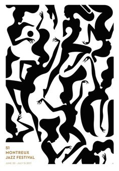
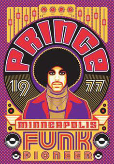
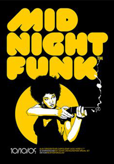

O Funk é um género musical com ritmo forte e que incita a dança.
O funk teve origem nos Estados Unidos nos anos 60, e foi criado através de uma mistura de outros gêneros musicais.
Alguns cantores com maior impacto neste estilo:
Funk estilo muito original
  Selecionei este vídeo deste estilo musical.
Géneros musicais que influenciaram este estilo:
| Exemplos de estilos de música que influenciaram o Funk | ||
|---|---|---|
| Afro | Jazz | Blues |
| Soul | Funk Favela | Funk Carioca |